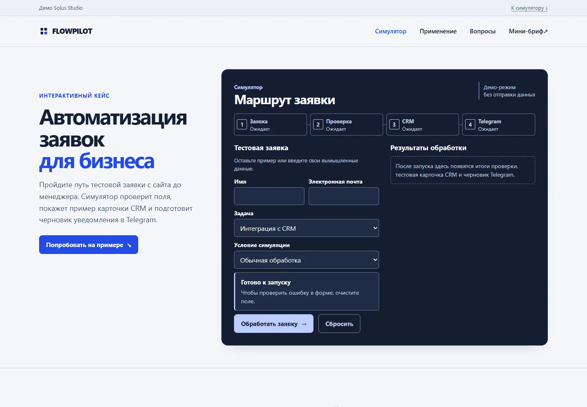

Клиентский проект · публичное демо
Legal Technology
Демоверсия сайта юридической и бухгалтерской компании с каталогом услуг и переключением языка.
Смотреть демо Legal TechnologyСтудия цифровой разработки
Проектируем интерфейсы и связываем сайты, Telegram-ботов и внутренние системы в рабочие процессы.
Симуляция
request.created
Посетитель выбирает услугу. В примере сайт формирует событие с тестовым идентификатором.
{ id: "demo-01", service: "website" }
request.validated
Проверяем обязательные поля и приводим данные к формату для следующего шага.
{ id: "demo-01", valid: true }
crm.record.preview
По проверенным данным формируется пример карточки с типом услуги и статусом.
{ id: "demo-01", stage: "new" }
telegram.message.preview
Из карточки собирается текст для команды: «Новая заявка на сайт».
{ id: "demo-01", delivery: "simulated" }
Тестовый сценарий. Все события условные.
Услуги
Один исполнитель для сайта, бота и систем, которые должны работать вместе.
Лендинги и корпоративные сайты с понятной навигацией и адаптивными экранами.
Сценарии записи, уведомления и внутренние инструменты для команды.
Подключаем CRM, таблицы и другие сервисы к вашим рабочим процессам.
{ "status": "ready" }Убираем ручные шаги между получением заявки, назначением ответственного и напоминанием.
Проекты
Посмотрите, как интерфейс и автоматизация работают в разных задачах.
Клиентский проект · публичное демо
Демоверсия сайта юридической и бухгалтерской компании с каталогом услуг и переключением языка.
Смотреть демо Legal Technology
Концепт · демонстрационный проект
Сайт мастерской по ремонту смартфонов и планшетов. В демо можно рассчитать примерную стоимость и передать выбор в тестовую форму.
Смотреть демо FIXLAB
Интерактивный симулятор
Обработайте тестовую заявку, посмотрите пример карточки CRM и черновик уведомления в Telegram.
Смотреть демо FLOWPILOTПроцесс
От первого вопроса до проверки готового сценария.
Уточняем, кто будет пользоваться решением, какие системы уже работают и какое действие должно стать проще.
Цель · аудитория · ограничения
Выстраиваем путь от первого экрана до результата. Определяем, где нужны данные, интеграции и обработка ошибок.
Маршрут · интерфейс · данные
Проходим основной сценарий на телефоне и компьютере. Проверяем фокус, переходы и состояния ошибок.
Устройства · ошибки · приёмка
Контакты
Сайт, бот или процесс, который занимает слишком много времени.